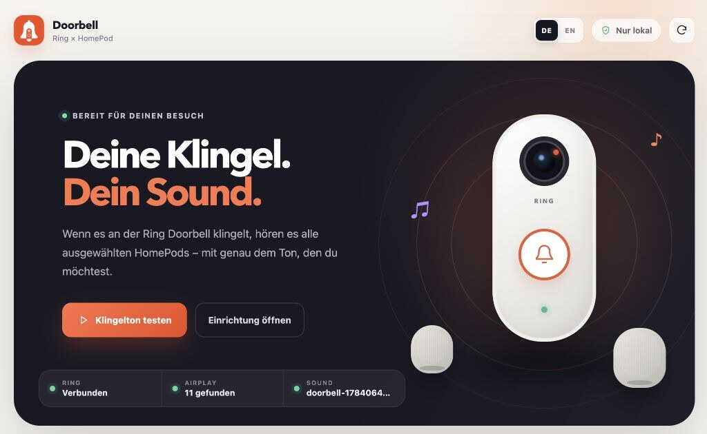
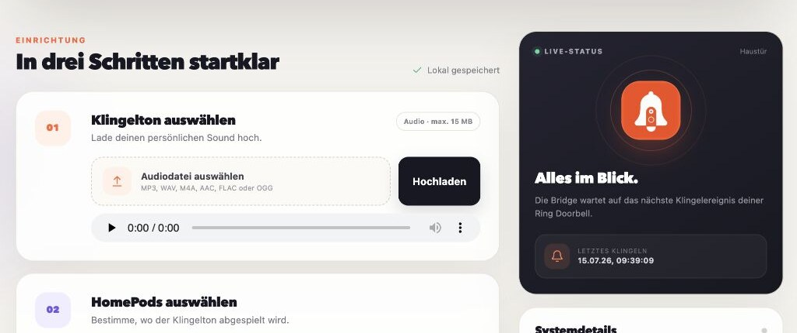

A chime that feels like home.
Upload MP3, WAV, M4A, AAC, FLAC, or OGG. Pick the sound that belongs in your home.
Turn every Ring Doorbell press into a custom chime on selected HomePods and AirPlay speakers — synchronized, configurable, and running on a server you control.

Everything you need for a personal, reliable doorbell experience — without sending your audio or settings to another service.
Upload MP3, WAV, M4A, AAC, FLAC, or OGG. Pick the sound that belongs in your home.
Choose individual HomePods, AirPlay speakers, and compatible Sonos devices — or include every new speaker automatically.
Set the volume, prevent duplicate rings with a cooldown, and test the full setup directly from the browser.
Your chime and configuration stay on your server. The marketing site uses no analytics, cookies, or trackers either.
Running at homeThe bridge connects the services you already use and keeps the whole flow inside your home network.
The bridge listens for the doorbell event through ring-client-api.
It applies the configured speaker selection, volume, custom chime, and cooldown.
The chime plays across the selected AirPlay speakers, then their prior state is restored.
See connection health at a glance, choose exactly where the sound should play, and keep an eye on the last doorbell event.

Use the guided Runtipi experience or run the same container with Docker Compose. Both keep everything on your server.
https://github.com/alexholzreiter/ring-homepod-doorbellgit clone https://github.com/alexholzreiter/ring-homepod-doorbell.git
cd ring-homepod-doorbell
cp .env.example .env
docker compose up -dRing HomePod Doorbell runs on hardware you control. Chimes and settings never pass through our servers because there are no servers of ours to pass through.
The practical details before you bring your custom chime to every room.
Yes. OwnTone discovers HomePod and HomePod mini models as AirPlay 2 outputs. They must be reachable from the server on the same network or through correctly routed mDNS.
Yes. Select any combination of discovered AirPlay speakers or automatically include every available output. Volume is configurable as well.
It can. OwnTone temporarily takes over the selected AirPlay outputs for the duration of the chime and restores its previous output selection and volume afterward.
No. The custom chime works through Ring and OwnTone. An optional virtual HomeKit doorbell can be enabled separately for Apple's standard chime.
No. It is an independent open-source project. The Ring connection uses an unofficial API, so future changes by Ring may require an app update.
Free, open source, and ready for your Runtipi or Docker server.